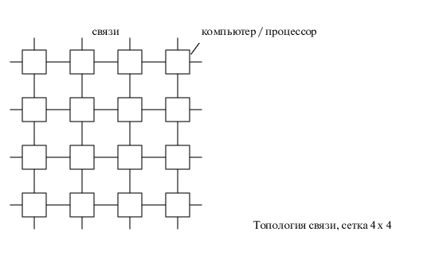
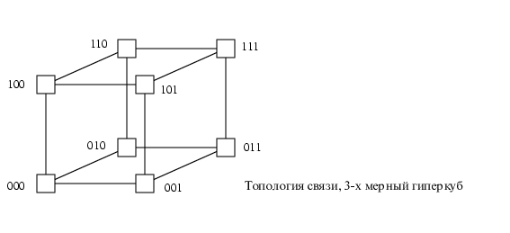
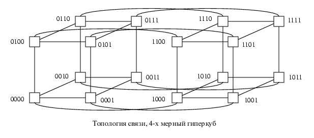
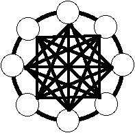
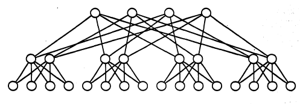
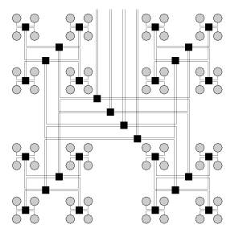

Кластерная архитектура
Под кластерной системой понимают набор рабочих станций (или даже персональных копмьютеров)
общего назначения, соединенных
с помощью стандартных сетевых технологий (Fast/Gigabit Ethernet, Myrinet) на базе шинной архитектуры или
коммутатора. Такие суперкомпьютерные системы являются самыми дешевыми, поскольку собираются на
базе стандартных комплектующих элементов ("off the shelf"), процессоров, коммутаторов, дисков и внешних
устройств.
Гетерогенными (неоднородными) кластерами называется объединение в кластер
компьютеров разной мощности или разной архитектуры.
Архитектура кластерной системы (способ соединения процессоров друг с
другом) в большей степени определяет ее производительность, чем тип используемых в ней процессоров.
Критическим параметром, влияющим на величину производительности такой системы, является расстояние
между процессорами.Так, соединив вместе 10 персональных компьютеров, мы получим систему для
проведения высокопроизводительных вычислений, проблема, однако, будет состоять в нахождении
наиболее эффективного способа соединения стандартных средств друг с другом, поскольку при увеличении
производительности каждого процессора в 10 раз производительность системы в целом в 10 раз не
увеличится.
Рассмотрим, для примера задачу построения симметричной 16-ти процессорной такой системы, в которой
все процессора были бы равноправны. Наиболее естественным представляется соединение в виде
плоской решетки, где внешние концы используются для подсоединения внешних устройств.
Схема соединения процессоров в виде плоской решетки

При таком типе соединения, максимальное расстояние между процессорами окажется равным 6
(количество связей между процессорами, отделяющих самый ближний процессор от самого дальнего).
Теория же показывает, что если в системе максимальное расстояние между процессорами больше 4, то
такая система не может работать эффективно. Поэтому, при соединении 16 процессоров друг с другом плоская
схема является не эффективной. Для получения более компактной конфигурации необходимо решить задачу о
нахождении фигуры, имеющей максимальный объем при минимальной площади поверхности. В трехмерном
пространстве таким свойством обладает шар. Но, поскольку, нам необходимо построить узловую систему, то
вместо шара приходится использовать куб (если число процессоров равно 8) или гиперкуб, если число
процессоров больше 8. Размерность гиперкуба будет определяться в зависимости от числа процессоров,
которые необходимо соединить. Так, для соединения 16 процессоров потребуется 4-х мерный гиперкуб. Для его
построения следует взять обычный 3-х мерный куб, сдвинуть в еще одном направлении и, соединив вершины,
получить гиперкуб размером 4
Примеры гиперкубов


Архитектура гиперкуба является второй по эффективности, но самой наглядной. Используются и дугии топологии сетей связи:
трехмерный тор, "кольцо", "звезда" и другие. (
Подробнее о топологии сетей)
Архитектура кольца с полной связью по хордам (Chordal Ring)

Наиболее эффективной является архитектура с топологией "толстого дерева" (fat-tree).
Архитектура "fat-tree" (hypertree) предложена Лейзерсоном (Charles E. Leiserson) в 1985 году. Процессоры
локализованы в листьях дерева, в то время как внутренние узлы дерева скомпонованы во внутреннюю сеть.
Поддеревья могут общаться между собой, не затрагивая более высоких уровней сети.
Кластерная архитектура "Fat-tree"

Кластерная архитектура "Fat-tree" (вид сверху на предыдущую схему)

Поскольку способ соединения процессоров друг с другом больше влияет на производительность кластера, чем
тип используемых в ней процессоров, то может оказаться более рентабельным создать систему из большего
числа дешевых компьютеров, чем из меньшего числа дорогих. В кластерах, как правило, используются
операционные системы, стандартные для рабочих станций, чаще всего, свободно распространяемые -
Linux, FreeBSD, вместе со специальными средствами поддержки параллельного программирования и
балансировки нагрузки. При работе с кластерам также как и с MPP системами используют так называемую
Massive Passing Programming Paradigm - парадигму программирования с передачей данных
(чаще всего - MPI).
Дешевизна подобных систем оборачивается большими накладными расходами на взаимодействие параллельных
процессов между собой, что сильно сужает потенциальный класс решаемых задач.


 [Назад]
[Оглавление]
[Вперед]
[Назад]
[Оглавление]
[Вперед]
Последнее обновление 27.12.2001 WebMaster